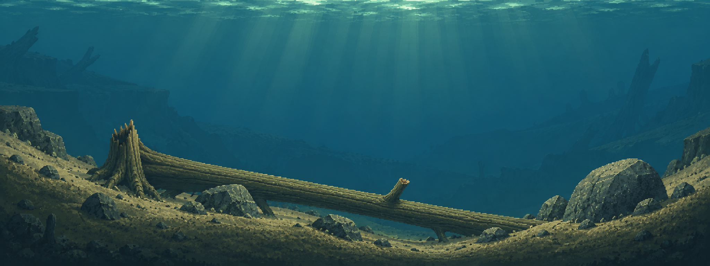
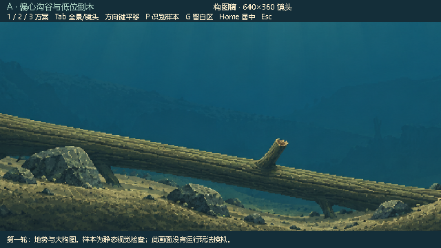
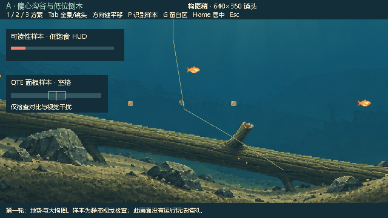

WATERGEN / ART DIRECTION / ROUND 01
自然池底，从地势开始。
这一轮比较坡地、沟谷、沉木与石群的关系。三套构图均从参考风格重新生成，尚未添加植物群落和装饰动物。中央水体保留安静的活动空间。

放到游戏镜头尺度里看
以下是 Godot 实际输出的 640 × 360 预览。鱼使用现有玩家像素贴图；食物、细线、QTE/HUD 为固定可读性样本。它们没有参与玩法模拟，也不代表正式游戏已接入。


当前是静态构图稿，不是碰撞地图或最终分层素材。选定方向后再制作植物群落与分层画面。A 的倒木附近、C 的右坡附近仍需持续检查细线和食物对比。